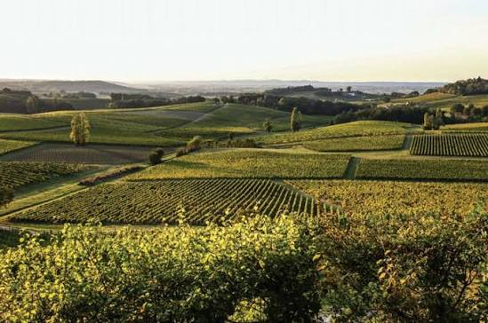
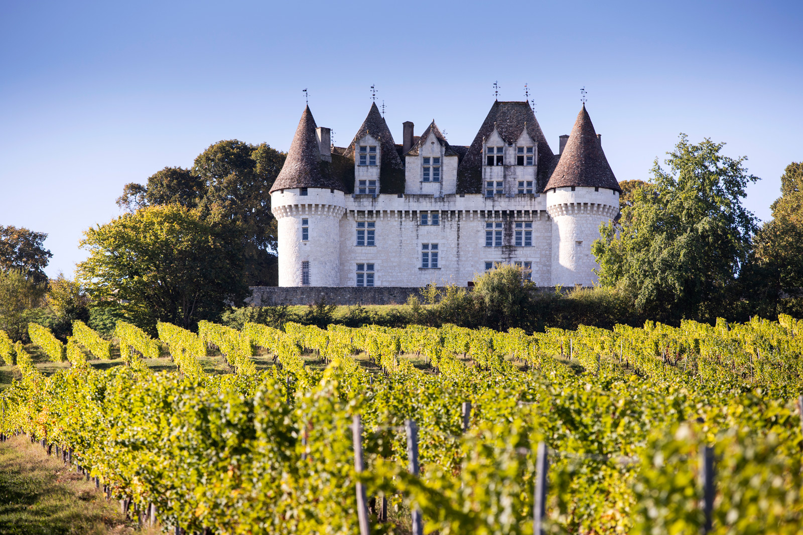

Bergerac
AOP


⟹ Vins & Boissons ⟸
Le vignoble de Bergerac est l'un des plus anciens et des plus attachants du Sud-Ouest de la France. Installé sur les rives de la Dordogne, à une cinquantaine de kilomètres à l'est de Bordeaux, il s'étend sur près de 11 500 hectares et propose une palette remarquable de vins rouges, blancs secs, rosés et liquoreux — dont les célèbres Monbazillac et Pécharmant. Un vignoble injustement méconnu, souvent éclipsé par son illustre voisin bordelais, mais qui n'a rien à lui envier en matière de qualité et de diversité.

La vigne est cultivée dans la région de Bergerac depuis l'époque gallo-romaine. Mais c'est au Moyen Âge, grâce aux moines de l'abbaye de Périgueux et aux marchands anglais, que le vignoble connaît son premier grand essor. Le vin de Bergerac est alors très apprécié à la cour d'Angleterre, et les tonneaux descendent la Dordogne jusqu'à Libourne puis Bordeaux pour être exportés vers les îles britanniques.
« Le Bergerac est un vin de terroir authentique — il parle de sa terre avec sincérité et générosité, sans artifice. »
— Henri Enjalbert, géographe, Les Grands Vins de Bordeaux et du Sud-Ouest, 1983Pendant des siècles, les vins de Bergerac ont souffert d'une concurrence déloyale imposée par Bordeaux — la ville portuaire interdisait aux vins du haut pays de descendre la Gironde avant le 11 novembre, après que les vins bordelais avaient été vendus. Cette discrimination séculaire a forgé dans les vignerons bergeracois une fierté et une indépendance d'esprit qui se retrouvent encore aujourd'hui dans la diversité et le caractère affirmé de leurs vins.
L'AOC Bergerac, reconnue en 1936, regroupe aujourd'hui une douzaine d'appellations distinctes sur un territoire d'une grande diversité géologique. Des terrasses alluviales de la Dordogne aux coteaux argilo-calcaires du Monbazillac, en passant par les graves de Pécharmant — chaque terroir exprime sa personnalité dans un vin différent, faisant du Bergeracois l'une des régions viticoles les plus riches et les plus variées du Sud-Ouest.

Aujourd'hui, environ 1 300 viticulteurs cultivent le vignoble bergeracois, dont une majorité de petits producteurs indépendants qui défendent une viticulture de terroir, souvent en agriculture biologique ou biodynamique. Cette diversité humaine se retrouve dans la richesse et la créativité des vins produits — du Bergerac rouge quotidien au grand Pécharmant de garde, en passant par les liquoreux d'exception de Monbazillac et de Saussignac.
Pécharmant & Cuisine du Périgord : le grand rouge bergeracois s'impose naturellement avec les plats emblématiques du Périgord — magret de canard aux cèpes, confit de canard aux pommes sarladaises, entrecôte à la bordelaise ou gigot d'agneau rôti. Un Pécharmant de 5 à 10 ans accompagne aussi à merveille les fromages à pâte dure du terroir.
Monbazillac & Foie gras : l'accord le plus célèbre du Bergeracois — un Monbazillac bien frais (10°C) avec une tranche de foie gras mi-cuit du Périgord. La richesse sucrée du vin répond à l'onctuosité du foie gras dans un mariage d'une justesse absolue. À ne pas négliger non plus avec le roquefort, les fromages persillés ou un dessert aux fruits jaunes.
Bergerac Blanc Sec & Fruits de mer : vif et aromatique, il accompagne parfaitement les huîtres du Bassin d'Arcachon, les coquilles Saint-Jacques poêlées, les poissons de la Dordogne en sauce ou une simple salade de chèvre chaud aux noix du Périgord.
Bergerac Rouge & Cuisine quotidienne : souple et fruité, le Bergerac Rouge est le compagnon idéal des repas de tous les jours — pâtes à la bolognaise, pizza, grillades estivales, planche de charcuterie périgourdine. À servir légèrement frais (16°C) pour révéler son fruité.
Saussignac & Desserts : ce liquoreux confidentiel s'accorde superbement avec les tarte Tatin, les financiers aux amandes, les gâteaux aux noix du Périgord ou simplement avec une assiette de fraises des bois à la crème. Une découverte qui surprend toujours les amateurs.
Le vignoble bergeracois est une destination œnotouristique chaleureuse et authentique, avec ses villages perchés, ses châteaux Renaissance et ses domaines familiaux ouverts à la dégustation.
Château de Monbazillac — Monument incontournable du Bergeracois, ce château Renaissance du XVIe siècle domine le vignoble depuis les hauteurs. Propriété de la Cave de Monbazillac, il accueille les visiteurs toute l'année avec des dégustations guidées et un musée consacré au vin et aux arts de la table.
Bergerac ville — Le centre historique accueille la Maison des Vins, véritable showroom des 12 appellations bergeracoises, avec dégustations commentées et conseil pour découvrir les producteurs locaux. Le quai Salvette, au bord de la Dordogne, est parsemé de caves et de restaurants proposant les vins du terroir.
Pécharmant et ses domaines — Une dizaine de domaines sont ouverts à la visite au nord-est de Bergerac. Le Domaine du Grand Jaure et le Château de Tiregand sont les références historiques de cette appellation de caractère.
La Route des Vins du Bergeracois — Circuit balisé de 200 km traversant les 12 appellations, de Montravel à Bergerac en passant par Monbazillac, Saussignac et Pécharmant. Des panneaux directionnels et une application mobile guident les visiteurs de domaine en domaine.
Issigeac et Eymet — Ces deux bastides médiévales du Périgord Pourpre sont entourées de vignobles et accueillent des marchés hebdomadaires où les producteurs vendent directement leurs vins. Un cadre de village médiéval préservé pour une dégustation au cœur du terroir.